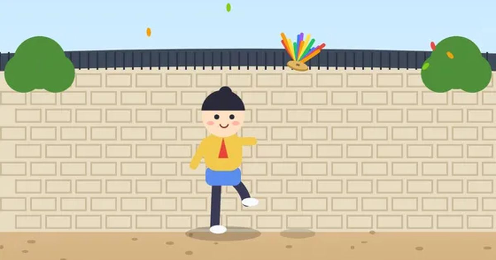

제기차기
Jegi Kick
타이밍 · 한 손무료설치 없음폰 · PC
▶ 지금 바로 하기로그인 없이 브라우저에서 바로 시작돼요
어떤 게임인가요?
떨어지는 제기 밑을 눌러 발로 톡! 땅에 떨어뜨리지 않고 몇 번까지 찰 수 있을까요? 발에 가까울 때 차면 명중, 바람이 불면 제기가 흔들려요. 기록을 세우면 새 제기가 열려요.
목표 · 제기를 땅에 떨어뜨리지 않고 최대한 많이 차세요.
이렇게도 찾아요
제기 게임전통놀이민속놀이jegichagikorean hacky sackjegi kick
#제기차기 #전통놀이 #민속놀이 #명절놀이
게임 방법
- 제기가 떨어지는 쪽을 누르면 아이가 달려가서 발로 톡 차요.
- 제기가 발 가까이 왔을 때 차면 명중 — 똑바로 높이 올라가서 다음 차기가 쉬워져요.
- 15개부터 바람이 불어 제기가 옆으로 흔들려요. 개수가 늘수록 조금씩 빨라져요.
- 최고 기록 15 · 30 · 50 · 100개를 넘기면 색동 · 청사초롱 · 꽃잎 · 금빛 제기가 열려요.
등장하는 것들
- 한지 제기 · 처음부터
- 색동 제기 · 15개
- 청사초롱 제기 · 30개
- 꽃잎 제기 · 50개
- 금빛 제기 · 100개
공략 팁
- 멀리 뛰어가기보다 제기 바로 밑에서 기다렸다 차는 게 명중이 많아요.
- 바람이 불면 제기가 흘러가는 쪽으로 한 발 먼저 가 있으세요.
이런 게임도 있어요
 필살 격투격투 · 1P/2P
필살 격투격투 · 1P/2P 반응속도 테스트측정 · 반사신경 · 1분
반응속도 테스트측정 · 반사신경 · 1분 글 타자 · 타자 빨리 치기타자 연습 · 문장
글 타자 · 타자 빨리 치기타자 연습 · 문장 한방 벽돌깨기조준 · 한 손
한방 벽돌깨기조준 · 한 손 별빛 편대슈팅 · 고전
별빛 편대슈팅 · 고전 오목보드 · 1P/2P/온라인
오목보드 · 1P/2P/온라인